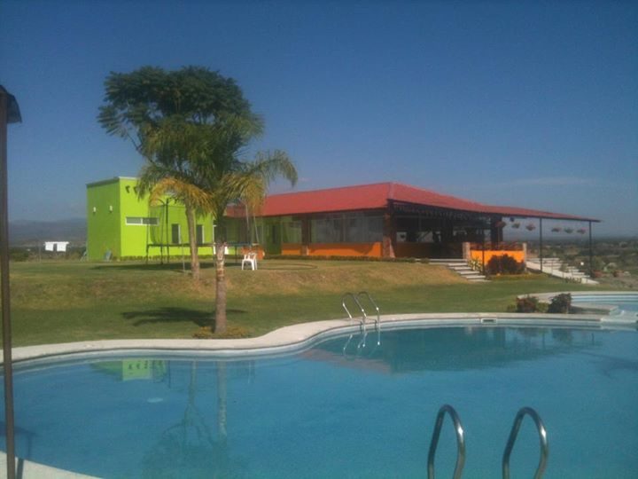
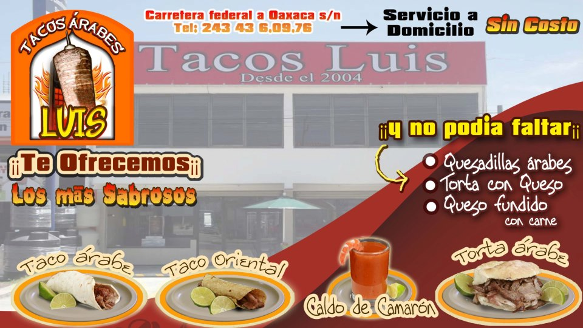

Restaurantes
LA BAHIA
Marisqueria "La Bahia"
Hidalgo Centro, Izucar De Matamoros, Puebla, México
Izúcar de Matamoros
Puebla
Loma Bonita.

Es un restaurante que se encuentra en Tlapanala y puedes hacer diversas atracciones como nadar o andar a caballo y pasar una bonita tarde familiar.
Tacos "Luis"

- carretera federal a oaxaca
- 74400 Izúcar de Matamoros, Mexico
REGRESAR AL INICIO